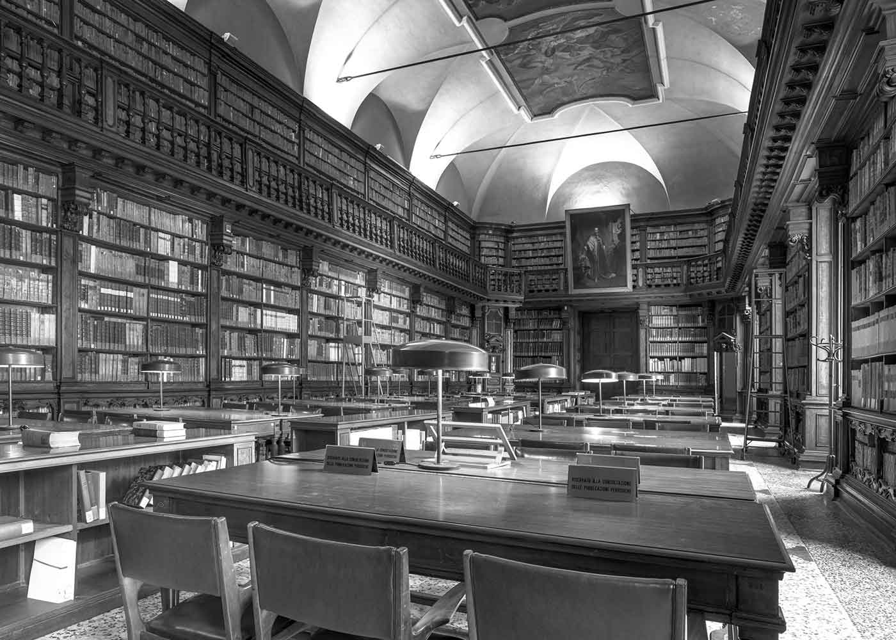

Biblioteca Nazionale Braidense
via Brera 28 (MI)

Descrizione
La Biblioteca Braidense custodisce un patrimonio storico e, dentro Tondo-lab, diventa anche uno spazio attivabile per corsi brevi. L'obiettivo è difendere e promuovere la lettura portando nuove pratiche di apprendimento tra scaffali, sale e comunità.
Servizi
Adatto per
Orari di apertura
La Biblioteca è aperta da lunedì a venerdì 8:30-18:15 e sabato 8:30-13:30.